library(ggplot2)
library(ggthemes)
library(dplyr)
library(readr)
library(forcats)
library(scales)
library(RColorBrewer)간단한 그래프(ggplot2)
R 패키지를 활용하여 다양한 작업을 할 수 있지만, 저는 그 중에서 데이터 분석과 통계 분석 및 모델을 기반으로 많은 업무를 진행하였습니다. 따라서 제가 생각하기 R 패키지 중에서 가장 활용 용도가 높다고 생각하는
ggplot2을 사용해서 간단한 R 코드를 연습하고, 데이터 시각화를 진행해보겠습니다.
제가 지금까지 사용했던 모든 그래프 도구 중에서 가장 멋진 라이브러리 입니다. 모든 그래프 도구가 나름의 멋짐을 가지고 있지만, ggplot2가 가져다 주는 조합의 묘미가 굉장히 흥미롭게 재미있습니다. 그리고 R을 사용함에 있어서 ggplot2를 잘 활용하면 좋은 데이터를 기반으로 더 나은 의사소통을 할 수 있습니다.
준비
ggplot2 패키지를 사용하기 위해서는 아래와 같은 패키지를 설치하고 불러와야 합니다. 패키지 설치는 install.packages()를 사용하시면 됩니다. ggplot2, dplyr, readr은 tidyverse 패키지에 포함되어 있기 때문에, 일반적으로 tidyverse를 설치하실 때 대부분 설치되었있습니다. 만약 설치되어 있지 않다면 install.packages("tidyverse")로 설치를 진행하시면 됩니다. ggthemes는 ggplot2의 테마를 추가 할 수 있는 패키지입니다.
데이터
간단한 데이터를 생성하고, 이를 시각화하는 방법을 알아보겠습니다. 이 데이터는 (Mauricio Vargas Sepúlveda, 2023)에서 가져왔습니다.
chilean_exports <- "year,product,export,percentage
2006,copper,4335009500,81
2006,others,1016726518,19
2007,copper,9005361914,86
2007,others,1523085299,14
2008,copper,6907056354,80
2008,others,1762684216,20
2009,copper,10529811075,81
2009,others,2464094241,19
2010,copper,14828284450,85
2010,others,2543015596,15
2011,copper,15291679086,82
2011,others,3447972354,18
2012,copper,14630686732,80
2012,others,3583968218,20
2013,copper,15244038840,79
2013,others,4051281128,21
2014,copper,14703374241,78
2014,others,4251484600,22
2015,copper,13155922363,78
2015,others,3667286912,22
"
exports_data <- read_csv(chilean_exports)Rows: 20 Columns: 4
── Column specification ────────────────────────────────────────────────────────
Delimiter: ","
chr (1): product
dbl (3): year, export, percentage
ℹ Use `spec()` to retrieve the full column specification for this data.
ℹ Specify the column types or set `show_col_types = FALSE` to quiet this message.선 그래프
colour <- c("#40b8d0", "#b2d183")
p1 <- ggplot(aes(y = export, x = year, colour = product), data = exports_data) +
geom_line(linewidth = 1.5) +
scale_x_continuous(breaks = seq(2006,2015,1)) +
labs(title = "Composition of Exports to China ($)",
subtitle = "Source: The Observatory of Economic Complexity") +
labs(x = "Year", y = "USD million") +
scale_colour_manual(values = colour) +
theme(panel.border = element_rect(colour = "black", fill = NA, size = .5),
axis.text.x = element_text(colour = "black", size = 10),
axis.text.y = element_text(colour = "black", size = 10),
legend.key = element_rect(fill = "white", colour = "white"),
legend.position = "bottom",
legend.direction = "horizontal",
legend.title = element_blank(),
panel.grid.major = element_line(colour = "#d3d3d3"),
panel.grid.minor = element_blank(),
panel.background = element_blank(),
plot.title = element_text(family = "MaruBuri Regular", face = "bold"),
text = element_text(family = "MaruBuri Regular"),
legend.key.size = unit(2, "lines")) +
geom_point(size = 3)Warning: The `size` argument of `element_rect()` is deprecated as of ggplot2 3.4.0.
ℹ Please use the `linewidth` argument instead.p1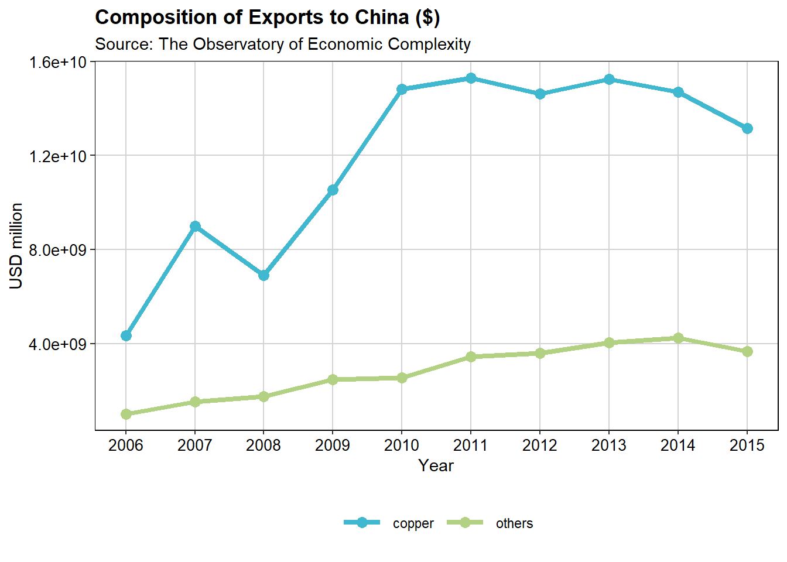
영역 차트(Area Chart)
fill <- c("#b2d183","#40b8d0")
p2 <- ggplot(aes(y = export, x = year, fill = fct_rev(product)), data = exports_data) +
geom_area() +
scale_x_continuous(breaks = seq(2006,2015,1)) +
labs(title = "Composition of Exports to China ($)",
subtitle = "Source: The Observatory of Economic Complexity") +
labs(x = "Year", y = "USD million") +
scale_fill_manual(values = fill) +
theme(panel.border = element_rect(colour = "black", fill = NA, size = .5),
axis.text.x = element_text(colour = "black", size = 10),
axis.text.y = element_text(colour = "black", size = 10),
legend.key = element_rect(fill = "white", colour = "white"),
legend.position = "bottom",
legend.direction = "horizontal",
legend.title = element_blank(),
panel.grid.major = element_line(colour = "#d3d3d3"),
panel.grid.minor = element_blank(),
panel.background = element_blank(),
plot.title = element_text(size = 14, family = "MaruBuri Regular", face = "bold"),
text = element_text(family = "MaruBuri Regular")) +
guides(fill = guide_legend(reverse = T))
p2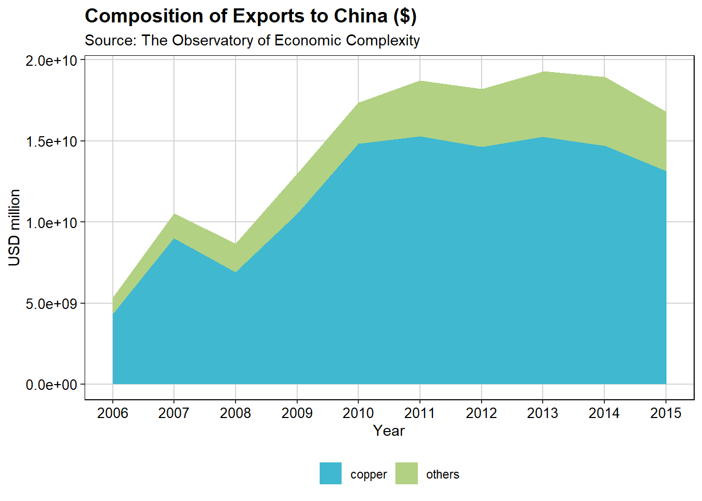
막대 그래프
exports_data <- exports_data %>%
mutate(export_label = paste(round(export/1000000000,2), "B"))
fill <- c("#b2d183","#40b8d0")
p3 <- ggplot(aes(y = export, x = year, fill = fct_rev(product)), data = exports_data) +
geom_col() +
geom_text(aes(label = export_label), position = position_stack(vjust = 0.5), colour = "black", family = "Tahoma", size = 3, show.legend = F) +
scale_x_continuous(breaks = seq(2006,2015,1)) +
labs(title = "Composition of Exports to China ($)", subtitle = "Source: The Observatory of Economic Complexity") +
labs(x = "Year", y = "USD million") +
scale_fill_manual(values = fill) +
theme(panel.border = element_rect(colour = "black", fill = NA, size = .5),
axis.text.x = element_text(colour = "black", size = 10),
axis.text.y = element_text(colour = "black", size = 10),
legend.key = element_rect(fill = "white", colour = "white"),
legend.position = "bottom", legend.direction = "horizontal",
legend.title = element_blank(),
panel.grid.major = element_line(colour = "#d3d3d3"),
panel.grid.minor = element_blank(),
panel.background = element_blank(),
plot.title = element_text(size = 14, family = "MaruBuri Regular", face = "bold"),
text = element_text(family = "MaruBuri Regular")) +
guides(fill = guide_legend(reverse = T))
p3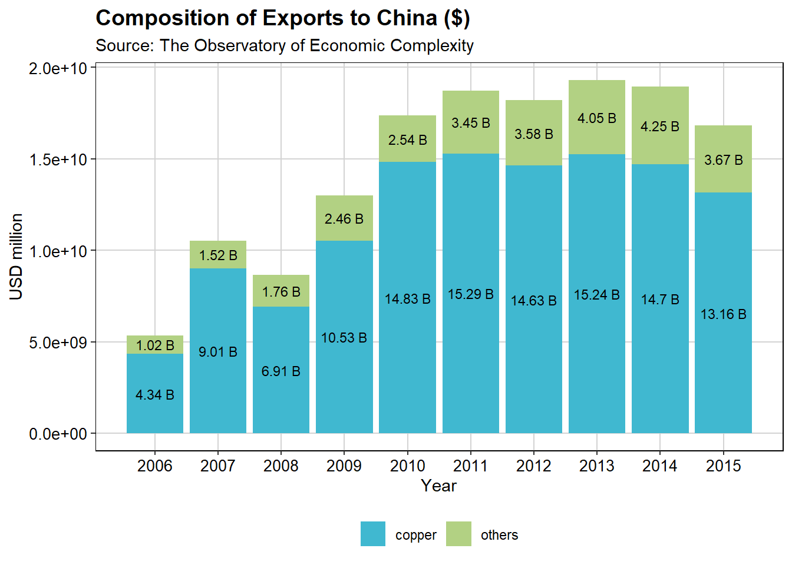
누적 막대(Stacked Bar) 그래프
fill <- c("#b2d183","#40b8d0")
p4 <- ggplot(aes(y = percentage, x = year, fill = fct_rev(product)), data = exports_data) +
geom_col() +
geom_text(aes(label = paste0(percentage,"%")), position = position_stack(vjust = 0.5), colour = "black", family = "MaruBuri Regular", size = 4) +
scale_x_continuous(breaks = seq(2006,2015,1)) +
scale_y_continuous(labels = dollar_format(suffix = "%", prefix = "")) +
labs(title = "Composition of Exports to China ($)", subtitle = "Source: The Observatory of Economic Complexity") +
labs(x = "Year", y = "Percentage") +
scale_fill_manual(values = fill) +
theme(panel.border = element_rect(colour = "black", fill = NA, size = .5),
axis.text.x = element_text(colour = "black", size = 10),
axis.text.y = element_text(colour = "black", size = 10),
legend.key = element_rect(fill = "white", colour = "white"),
legend.position = "bottom", legend.direction = "horizontal",
legend.title = element_blank(),
panel.grid.major = element_line(colour = "#d3d3d3"),
panel.grid.minor = element_blank(),
panel.background = element_blank(),
plot.title = element_text(size = 14, family = "MaruBuri Regular", face = "bold"),
text = element_text(family = "MaruBuri Regular")) +
guides(fill = guide_legend(reverse = T))
p4
산점도(Scatter)
data(airquality)
aq_trim <- airquality %>%
filter(Month %in% c(7,8,9)) %>%
mutate(Month = factor(Month, labels = c("July", "August", "September")))
fill <- c("steelblue", "yellowgreen", "violetred1")
p5 <- ggplot(aq_trim, aes(x = Day, y = Ozone, fill = Month)) +
geom_point(shape = 21) +
labs(title = "Air Quality in New York by Day", subtitle = "Source: New York State Department of Conservation") +
labs(x = "Day of the month", y = "Ozone (ppb)", fill = "Months ") +
scale_x_continuous(breaks = seq(1, 31, 5)) +
scale_size(range = c(1, 10)) +
scale_fill_manual(values = fill) +
theme(panel.border = element_rect(colour = "black", fill = NA, size = .5),
axis.text.x = element_text(colour = "black", size = 9),
axis.text.y = element_text(colour = "black", size = 9),
legend.position = "bottom", legend.direction = "horizontal",
panel.grid.major = element_line(colour = "#d3d3d3"),
panel.grid.minor = element_blank(),
panel.background = element_blank(),
plot.title = element_text(size = 14, family = "MaruBuri Regular", face = "bold"),
text = element_text(family = "MaruBuri Regular"))
p5Warning: Removed 11 rows containing missing values or values outside the scale range
(`geom_point()`).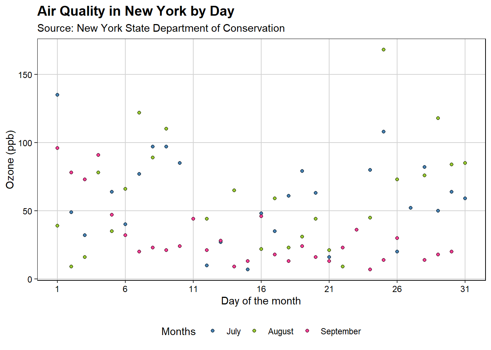
가중 산점도(Weighted Scatter)
fill <- c("steelblue", "yellowgreen", "violetred1")
p6 <- ggplot(aq_trim, aes(x = Day, y = Ozone, size = Wind, fill = Month)) +
geom_point(shape = 21) +
labs(title = "Air Quality in New York by Day", subtitle = "Source: New York State Department of Conservation") +
labs(x = "Day of the month", y = "Ozone (ppb)", size = "Wind Speed (mph) ", fill = "Months ") +
scale_x_continuous(breaks = seq(1, 31, 5)) +
scale_size(range = c(1, 10)) +
scale_fill_manual(values = fill) +
theme(panel.border = element_rect(colour = "black", fill = NA, size = .5),
axis.text.x = element_text(colour = "black", size = 9),
axis.text.y = element_text(colour = "black", size = 9),
legend.position = "bottom",
legend.direction = "horizontal",
legend.box = "vertical",
legend.key.size = unit(0.5, "cm"),
legend.key = element_blank(),
panel.grid.major = element_line(colour = "#d3d3d3"),
panel.grid.minor = element_blank(),
panel.background = element_blank(),
plot.title = element_text(size = 14, family = "MaruBuri Regular", face = "bold"),
text = element_text(family = "MaruBuri Regular"))
p6Warning: Removed 11 rows containing missing values or values outside the scale range
(`geom_point()`).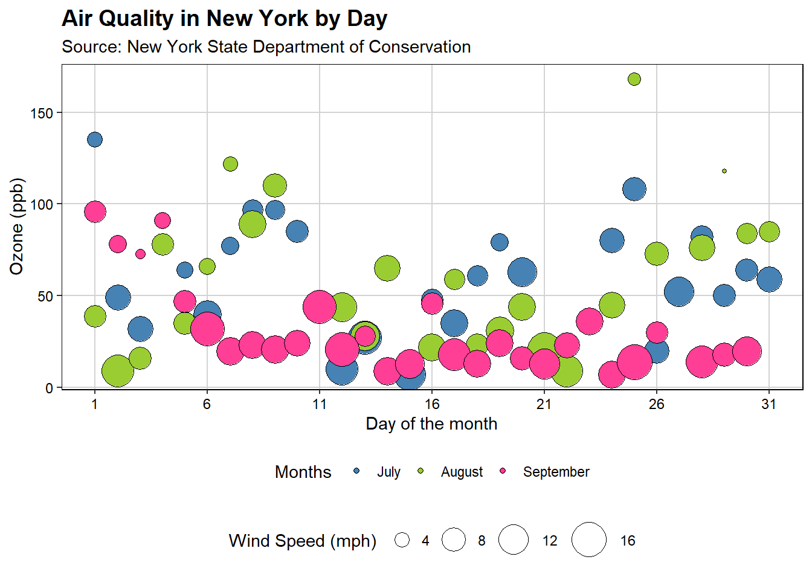
히스토그램(Histograms)
data(airquality)
barfill <- "#4271AE"; barlines <- "#1F3552"
p7 <- ggplot(airquality, aes(x = Ozone)) +
geom_histogram(aes(y = ..count..), binwidth = 5, colour = barlines, fill = barfill) +
scale_x_continuous(name = "Mean ozone in\nparts per billion", breaks = seq(0, 175, 25), limits = c(0, 175)) +
scale_y_continuous(name = "Count") +
labs(title = "Frequency histogram of mean ozone", subtitle = "Source: New York State Department of Conservation") +
geom_vline(xintercept = 75, size = 1, colour = "#FF3721", linetype = "dashed") +
theme(panel.border = element_rect(colour = "black", fill = NA, linewidth = .5),
axis.text.x = element_text(colour = "black", size = 9),
axis.text.y = element_text(colour = "black", size = 9),
legend.position = "bottom",
legend.direction = "horizontal",
legend.box = "horizontal",
legend.key = element_blank(),
panel.grid.major = element_line(colour = "#d3d3d3"),
panel.grid.minor = element_blank(),
panel.background = element_blank(),
plot.title = element_text(size = 14, family = "MaruBuri Regular", face = "bold"),
text = element_text(family = "MaruBuri Regular"))Warning: Using `size` aesthetic for lines was deprecated in ggplot2 3.4.0.
ℹ Please use `linewidth` instead.p7Warning: The dot-dot notation (`..count..`) was deprecated in ggplot2 3.4.0.
ℹ Please use `after_stat(count)` instead.Warning: Removed 37 rows containing non-finite outside the scale range
(`stat_bin()`).Warning: Removed 2 rows containing missing values or values outside the scale range
(`geom_bar()`).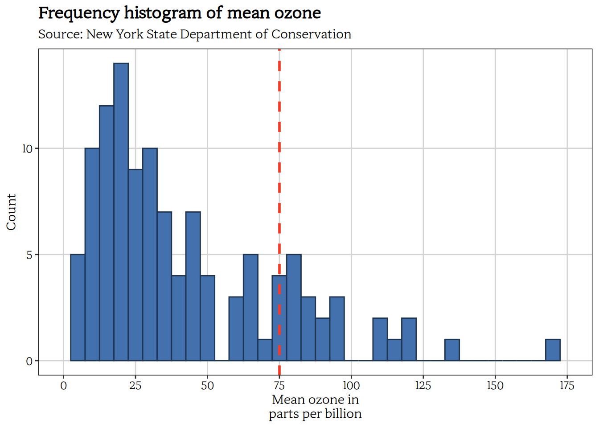
airquality_trimmed <- airquality %>%
filter(Month %in% c(5,7)) %>%
mutate(Month.f = factor(Month, labels = c("May", "July")))
p7 <- ggplot(airquality_trimmed, aes(x = Ozone)) +
geom_histogram(aes(y = ..count..), binwidth = 10, colour = barlines, fill = barfill) +
scale_x_continuous(name = "Mean ozone in\nparts per billion", breaks = seq(0, 175, 25), limits = c(0, 175)) +
scale_y_continuous(name = "Count") +
labs(title = "Frequency histogram of mean ozone", subtitle = "Source: New York State Department of Conservation") +
facet_grid(. ~ Month.f, scales = "free") +
theme(panel.border = element_rect(colour = "black", fill = NA, size = .5),
axis.text.x = element_text(colour = "black", size = 9),
axis.text.y = element_text(colour = "black", size = 9),
legend.position = "bottom",
legend.direction = "horizontal",
legend.box = "horizontal",
legend.key = element_blank(),
panel.grid.major = element_line(colour = "#d3d3d3"),
panel.grid.minor = element_blank(),
panel.background = element_blank(),
plot.title = element_text(size = 14, family = "MaruBuri Regular", face = "bold"),
text = element_text(family = "MaruBuri Regular"))
p7 Warning: Removed 10 rows containing non-finite outside the scale range
(`stat_bin()`).Warning: Removed 2 rows containing missing values or values outside the scale range
(`geom_bar()`).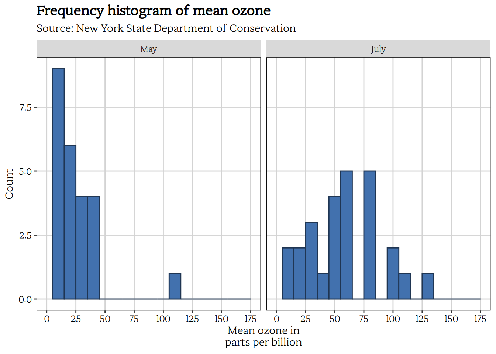
p7 <- ggplot(airquality_trimmed, aes(x = Ozone, fill = Month.f)) +
geom_histogram(aes(y = ..count..), binwidth = 10, position = "identity", alpha = 0.75) +
scale_x_continuous(name = "Mean ozone in\nparts per billion", breaks = seq(0, 175, 25), limits = c(0, 175)) +
scale_y_continuous(name = "Count") +
labs(title = "Frequency histogram of mean ozone", subtitle = "Source: New York State Department of Conservation") +
scale_fill_brewer(palette = "Accent") +
theme(panel.border = element_rect(colour = "black", fill = NA, size = .5),
axis.text.x = element_text(colour = "black", size = 9),
axis.text.y = element_text(colour = "black", size = 9),
legend.position = "bottom",
legend.direction = "horizontal",
legend.box = "horizontal",
legend.key = element_blank(),
panel.grid.major = element_line(colour = "#d3d3d3"),
panel.grid.minor = element_blank(),
panel.background = element_blank(),
plot.title = element_text(size = 14, family = "MaruBuri Regular", face = "bold"),
text = element_text(family = "MaruBuri Regular")) +
labs(fill = "Month ")
p7Warning: Removed 10 rows containing non-finite outside the scale range
(`stat_bin()`).Warning: Removed 2 rows containing missing values or values outside the scale range
(`geom_bar()`).
밀집(Denstiy) 그래프
data(airquality)
p8 <- ggplot(airquality, aes(x = Ozone)) +
geom_density(fill = "#4271AE", colour = "#1F3552", alpha = 0.75) +
scale_x_continuous(name = "Mean ozone in\nparts per billion", breaks = seq(0, 175, 25), limits = c(0, 175)) +
scale_y_continuous(name = "Density") +
labs(title = "Density plot of mean ozone", subtitle = "Source: New York State Department of Conservation") +
theme(panel.border = element_rect(colour = "black", fill = NA, size = .5),
axis.text.x = element_text(colour = "black", size = 9),
axis.text.y = element_text(colour = "black", size = 9),
legend.position = "bottom",
legend.direction = "horizontal",
legend.box = "horizontal",
legend.key = element_blank(),
panel.grid.major = element_line(colour = "#d3d3d3"),
panel.grid.minor = element_blank(),
panel.background = element_blank(),
plot.title = element_text(size = 14, family = "MaruBuri Regular", face = "bold"),
text = element_text(family = "MaruBuri Regular"))
p8Warning: Removed 37 rows containing non-finite outside the scale range
(`stat_density()`).
airquality_trimmed <- airquality %>%
filter(Month %in% c(5,6,7)) %>%
mutate(Month.f = factor(Month, labels = c("May", "June", "July")))
p8 <- ggplot(airquality_trimmed, aes(x = Ozone, colour = Month.f)) +
geom_density(position = "identity", size = 1) +
scale_x_continuous(name = "Mean ozone in\nparts per billion", breaks = seq(0, 200, 25), limits = c(0, 200)) +
scale_y_continuous(name = "Density") +
labs(title = "Frequency histogram of mean ozone", subtitle = "Source: New York State Department of Conservation") +
scale_colour_brewer(palette = "Accent") +
labs(colour = "Month ") +
theme_bw() +
theme(legend.position = "bottom",
panel.border = element_rect(colour = "black", fill = NA, size = .5),
plot.title = element_text(size = 14, family = "MaruBuri Regular", face = "bold"),
text = element_text(size = 12, family = "MaruBuri Regular"))
p8Warning: Removed 31 rows containing non-finite outside the scale range
(`stat_density()`).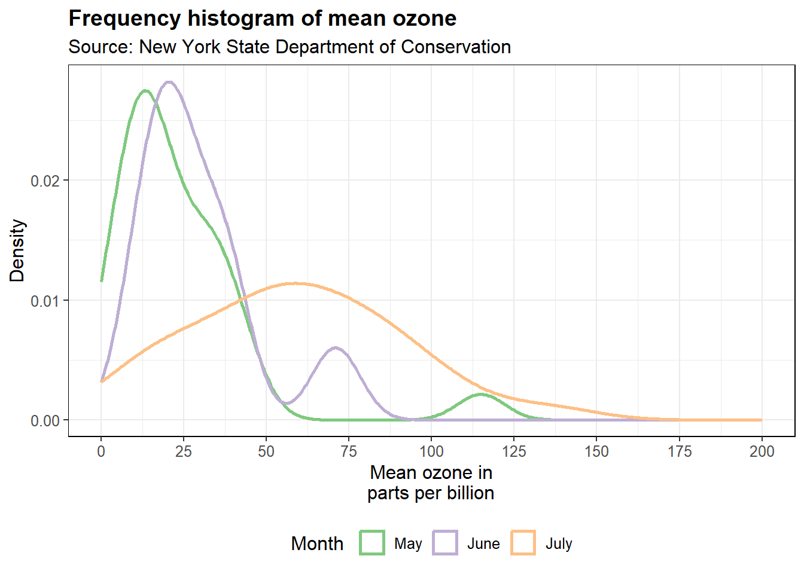
Function 그래프
funcShaded <- function(x) {
y <- dnorm(x, mean = 0.2, sd = 0.1)
y[x < 0.2 | x > (0.2 + 4 * 0.1)] <- NA
return(y)
}
p9 <- ggplot(tibble(x = c(0, 1)), aes(x = x)) +
stat_function(fun = dnorm, args = list(0.2, 0.1),
aes(colour = "Group 1 "), size = 1.5) +
stat_function(fun = dnorm, args = list(0.7, 0.05),
aes(colour = "Group 2 "), size = 1.5) +
stat_function(fun = funcShaded, geom = "area", fill = "#84CA72", alpha = 0.2) +
scale_x_continuous(name = "Probability", breaks = seq(0, 1, 0.2), limits = c(0, 1)) +
scale_y_continuous(name = "Frequency") +
labs(title = "Normal function curves of probabilities") +
labs(colour = "Groups ") +
scale_colour_brewer(palette = "Accent") +
theme_bw() +
theme(panel.border = element_rect(colour = "black", fill = NA, size = .5),
axis.text.x = element_text(colour = "black", size = 9),
axis.text.y = element_text(colour = "black", size = 9),
legend.position = "bottom",
legend.direction = "horizontal",
legend.box = "horizontal",
panel.grid.major = element_line(colour = "#d3d3d3"),
panel.grid.minor = element_blank(),
panel.background = element_blank(),
plot.title = element_text(size = 14, family = "MaruBuri Regular", face = "bold"),
text = element_text(family = "MaruBuri Regular"))
p9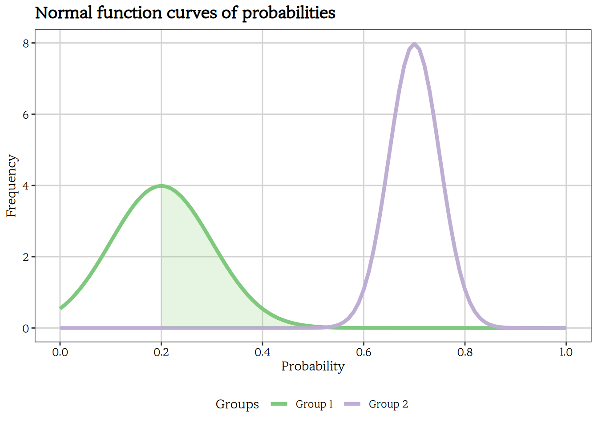
박스 플롯(Boxplot)
data(airquality)
fill <- "#4271AE"; lines <- "#1F3552"
airquality <- airquality %>%
mutate(Month = factor(Month,
labels = c("May", "Jun", "Jul", "Aug", "Sep")))
p10 <- ggplot(airquality, aes(x = Month, y = Ozone)) +
geom_boxplot(colour = lines, fill = fill, size = 1, notch = TRUE) +
scale_y_continuous(name = "Mean ozone in\nparts per billion", breaks = seq(0, 175, 25), limits = c(0, 175)) +
scale_x_discrete(name = "Month") +
labs(title = "Frequency histogram of mean ozone", subtitle = "Source: New York State Department of Conservation") +
theme_bw() +
theme(panel.border = element_rect(colour = "black", size = .5),
panel.grid.major = element_line(colour = "#d3d3d3"),
panel.grid.minor = element_blank(),
panel.background = element_blank(),
plot.title = element_text(size = 14, family = "MaruBuri Regular", face = "bold"),
text = element_text(family = "MaruBuri Regular"),
axis.title = element_text(face = "bold"),
axis.text.x = element_text(colour = "black", size = 11),
axis.text.y = element_text(colour = "black", size = 9))
p10Warning: Removed 37 rows containing non-finite outside the scale range
(`stat_boxplot()`).Notch went outside hinges
ℹ Do you want `notch = FALSE`?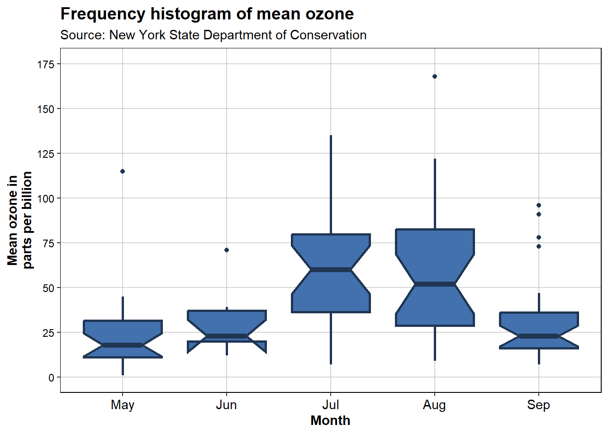
data(airquality)
fill <- "#4271AE"; line <- "#1F3552"
airquality <- airquality %>%
mutate(Month = factor(Month,
labels = c("May", "Jun", "Jul", "Aug", "Sep")))
airquality_trimmed <- airquality %>%
filter(Month %in% c("Jul", "Aug", "Sep")) %>%
mutate(Temp.f = factor(ifelse(Temp > mean(Temp), 1, 0),
labels = c("Low temp ", "High temp ")))
p10 <- ggplot(airquality_trimmed, aes(x = Month, y = Ozone)) +
geom_boxplot(fill = fill, colour = line, alpha = 0.7) +
scale_y_continuous(name = "Mean ozone in\nparts per billion", breaks = seq(0, 175, 50), limits = c(0, 175)) +
scale_x_discrete(name = "Month") +
labs(title = "Frequency histogram of mean ozone", subtitle = "Source: New York State Department of Conservation") +
theme_bw() +
theme(plot.title = element_text(size = 14, family = "MaruBuri Regular", face = "bold"),
panel.border = element_rect(colour = "black", fill = NA, size = .5),
text = element_text(size = 12, family = "MaruBuri Regular"),
axis.title = element_text(face = "bold"),
axis.text.x = element_text(size = 11)) +
facet_grid(. ~ Temp.f)
p10 Warning: Removed 11 rows containing non-finite outside the scale range
(`stat_boxplot()`).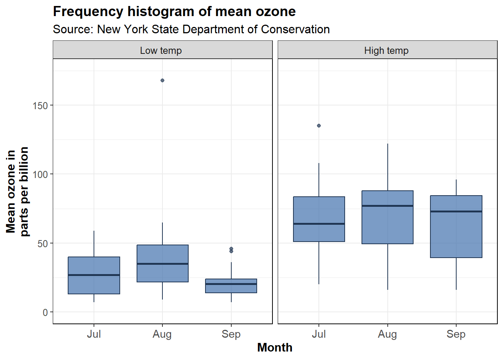
References
Mauricio Vargas Sepúlveda, J. B. (2023). The hitchhiker’s guide to Ggplot2. Leanpub.